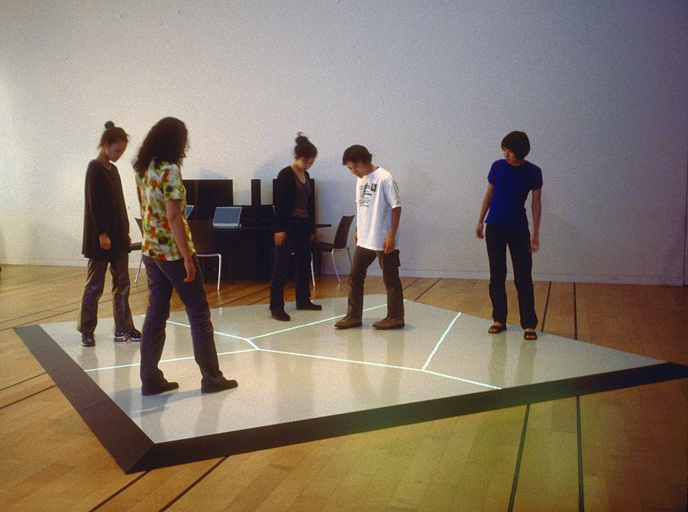
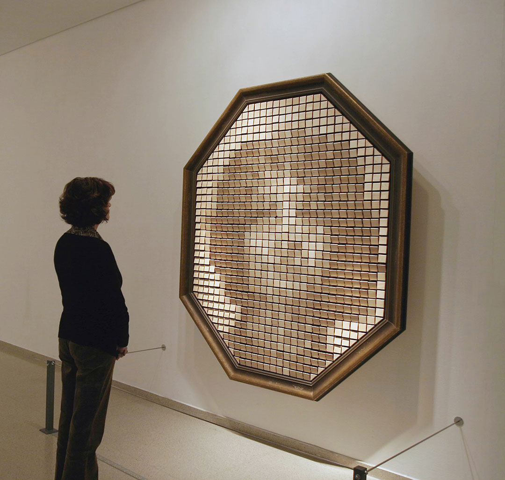
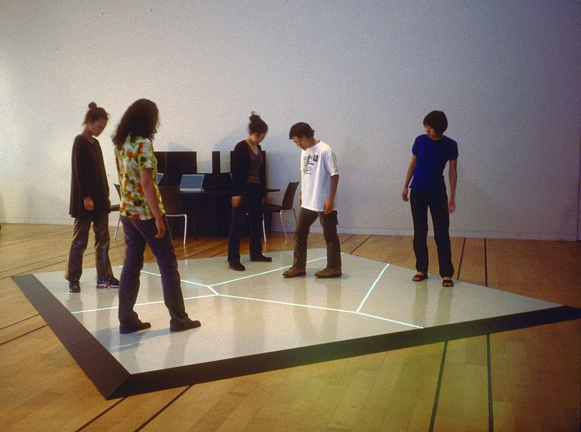
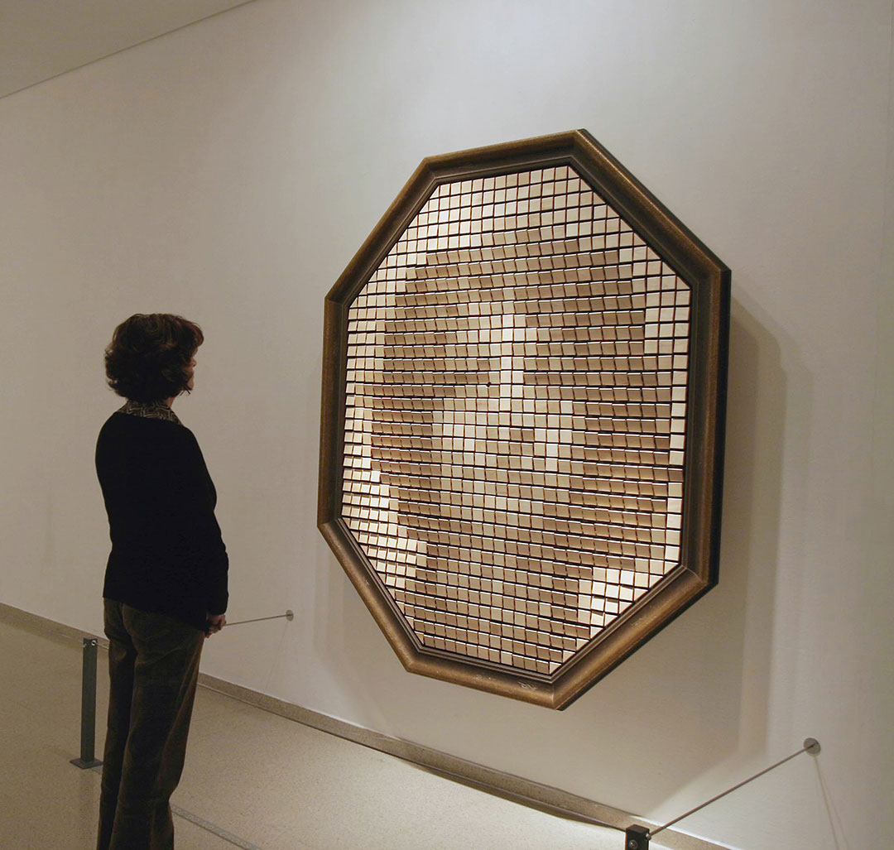

Variablen
A variable is a container for a value,
like a number we might use in a sum,
or a string that we might use as part of a sentence.
(MDN)
Variablen in JavaScript
Variablen in p5.js
Bedingte Anweisung
Übung: Interaktive Kunst
Interaktive Kunst ist eine Form der Kunst, bei es zu einer Wechselwirkung zwischen dem Betrachter und dem Kunstwerk kommt.
In der Regel handelt es sich um computergestützte Arbeiten,
die eine dialogartige Situation zwischen Werk und Betrachter herstellen.
(Wikipedia)
 


